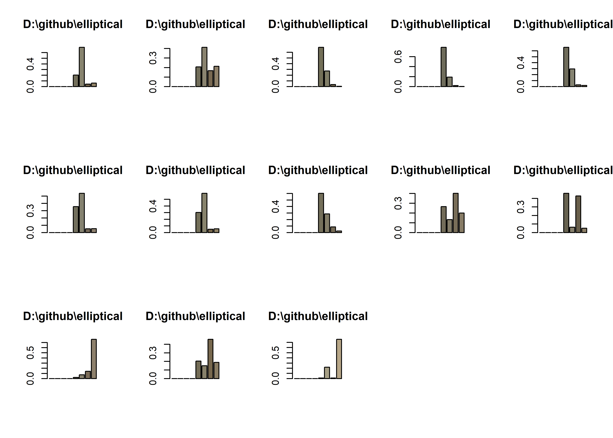

# compare colors
library(here)
library(colordistance)
library(recolorize)
library(dplyr)
library(vegan)
library(ape)
# get image paths
images <- colordistance::getImagePaths('images')
# generate color distance matrix
cdm <- imageClusterPipeline(images,
lower = FALSE,
upper = FALSE,
hist.bins = 3,
color.space = 'rgb')
|
| | 0%
|
|===== | 8%
|
|=========== | 15%
|
|================ | 23%
|
|====================== | 31%
|
|=========================== | 38%
|
|================================ | 46%
|
|====================================== | 54%
|
|=========================================== | 62%
|
|================================================ | 69%
|
|====================================================== | 77%
|
|=========================================================== | 85%
|
|================================================================= | 92%
|
|======================================================================| 100%
# replace NAs with 0
cdm[is.na(cdm)] = 0
# export color distance matrix
write.csv(cdm, file = "color_distance_matrix.csv")